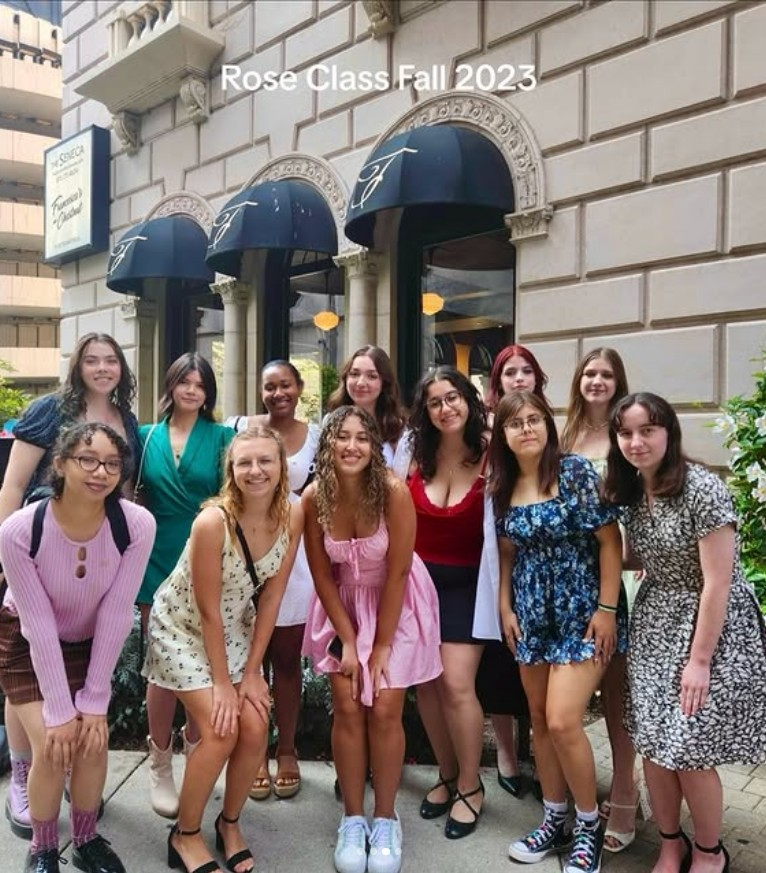

Homepage
About me
Summary
My name is Amelie and I am a 3rd year at IIT majoring in ITM and Cyber Forensics and Security. I spent my first 2 years here studying computer science, so I am also pursuing a minor in CS.
Hobbies
In my free time I like to listen to music and read. Some of my favorite books that I've read are:
- A Winter's Promise Quartet by Christelle Dabos
- Pride and Prejudice by Jane Austen
- Howl's Moving Castle by Diane Wynne Jones
- The Last Unicorn by Peter S. Beagle
One of my favorite pastimes is watching movies. My top 5 movies are:
- The Pianist
- 10 Things I Hate About You
- Princess Bride
- Spirited Away
- Grave of Fireflies
Fun fact: I was named after a movie! The french film Amelie, i.e. my namesake, was released in 2001 and won many awards internationally. It was also nominated for Academy Awards for Best International Feature Film and Best Cinematography, amongst several other categories.
I also like to play piano. In fact, I've played for over 15 years! Here's one of my first recitals:
Sadly, ever since I quit lessons 3 years ago, I've lost some of my skills. On the brightside, I can finally grow out my nails.
Campus Involvement
I've been involved in a lot of organizations on campus throughout my years here. I was the Computer Science Major Representative and also Secretary of the Society of Environmental Engineers and Scientists. I am currently the Secretary of the Society of Asian Scientists and Engineers.
I am currently a tutor at the ARC for Computer Science and ITM. On top of that, I am a math mentor for the General Learning Strategies, or GLS, program at Illinois Tech.
I am also a member of the Kappa Phi Delta sorority, where I am both Assistant 1st Vice President of Recruitment and External Chair. Previously, I was Scholarship Chair and Assistant External.
